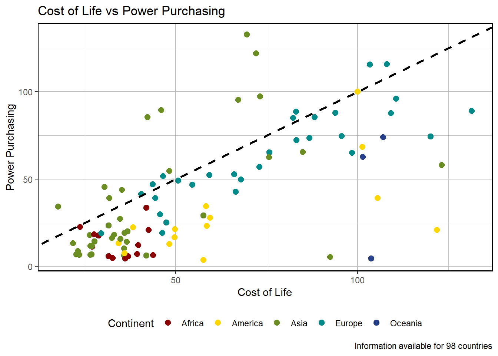
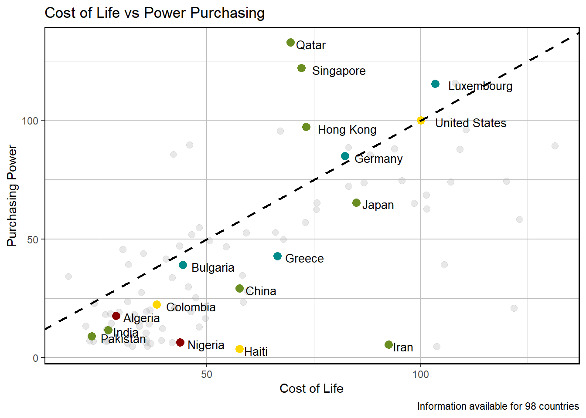
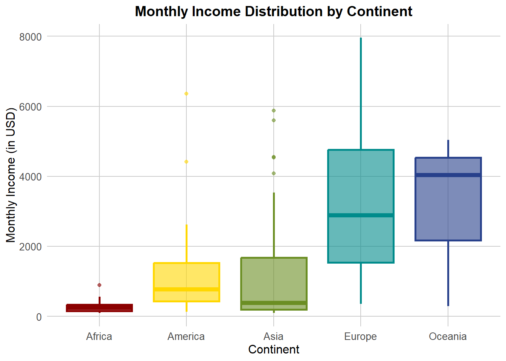
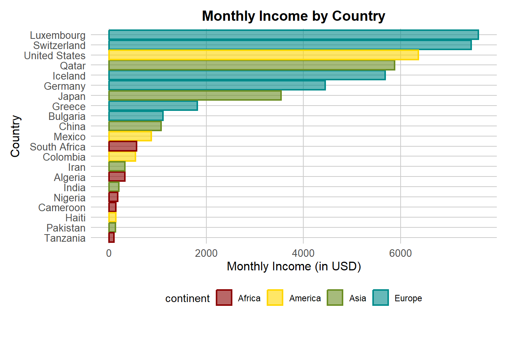
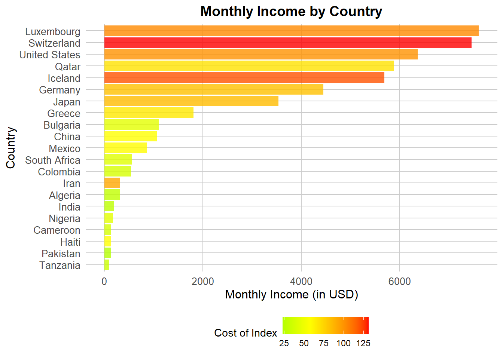

Having grown up in one of the most unequal societies in the world (Latin America), I have been able to observe the significant impact that economic inequality has on a society, on the behavior of its individuals, their aspirations, and their ideals. While this is a topic with a deep sociological perspective and extensive complexity, for this project, I would like to address simple and interesting relationships between variables related to economic inequality in different countries around the world.
Summary of Data Tables
For this project, three different databases will be used. One of them contains information on socioeconomic inequality indices and Human Development by country (obtained from Kraggle) . The second database includes information on the cost of living, purchasing power, and average monthly income by country (obtained from Kraggle). Lastly, the third database provides information on the percentage of total monthly income generated in a country that is obtained by the top 10% richest of the population (obtained from World Inequality Database).
To create the master database, the three databases are merged using the variable “Country” as the key. As a result, we obtain a database with the following information for more than 100 countries:
library(data.table)library(kableExtra)
Warning: package 'kableExtra' was built under R version 4.4.2
The following object is masked from 'package:kableExtra':
group_rows
The following objects are masked from 'package:data.table':
between, first, last
The following objects are masked from 'package:stats':
filter, lag
The following objects are masked from 'package:base':
intersect, setdiff, setequal, union
library(knitr)
Warning: package 'knitr' was built under R version 4.4.2
db1<-fread("cost of life.csv")db2<-fread("inequality in income.csv")db3<-fread("wealthiest.csv")data<-merge(db2,db1,by="country",all.x = T)data<-merge(data,db3,by="country",all.x = T)vars<-names(data)descvars<-c("Name of the Country","Name of the Continent","Human Development Group: Low,Medium,High,Very High", "Index of Inequality Income: Number from 0 to 100","","","","","","","","","","","","","Cost of Life Index: A numerical value that quantifies the cost of living in each country","Purchasing Power Index: A numerical value that quantifies the purchasing power of the population in each country","Percentage of the total income of a country which is obtained for the 10% wealthiest")summaryvars<-data.frame("Variables"=vars,"Description"=descvars)kable(summaryvars,format ="html") |>kable_styling(font_size =12)
Variables
Description
country
Name of the Country
continent
Name of the Continent
HDGroup
Human Development Group: Low,Medium,High,Very High
InequalityIncome2010
Index of Inequality Income: Number from 0 to 100
InequalityIncome2011
InequalityIncome2012
InequalityIncome2013
InequalityIncome2014
InequalityIncome2015
InequalityIncome2016
InequalityIncome2017
InequalityIncome2018
InequalityIncome2019
InequalityIncome2020
InequalityIncome2021
cost_index
monthly_income
Cost of Life Index: A numerical value that quantifies the cost of living in each country
purchasingpower_index
Purchasing Power Index: A numerical value that quantifies the purchasing power of the population in each country
shareofwealthiest
Percentage of the total income of a country which is obtained for the 10% wealthiest
Income Inequality
To begin with, it is intriguing to examine the behavior of InequalityIncome over recent years. To this end, curves can be generated to illustrate how this variable has evolved overall, by continents, and by HDI groups.
In the first graph, we can observe that in the last decade, the general trend of inequality is decreasing, except for Oceania, which seems to maintain stable values.
If we analyze the behavior by continent, we can note that America has had the most variation in the last decade, lowering its average Inequality Income by almost 3 points.
Regarding Europe, we can note that between 2010 and 2016, it was the only continent that showed slight constant growth in inequality. However, from 2016 to 2021, it was able to recover significantly.
Overall, we see that Africa and America are far above the rest of the continents in terms of inequality levels.
Average inequality income by Human Development Group
On the other hand, in the second graph, surprisingly, we find that the Human Development Index is not closely related to the Inequality Income Index.
While countries with a very high Human Development Index are far below the average, the rest of the countries, including those with a High Human Development Index, always exceed 25 points in the inequality index. Furthermore, these countries tend to behave very similarly in the last five years of the study period, regardless of their Human Development Group.
Cost of Life vs Purchasing Power
Continuing with the analysis, it is worth exploring how countries are distributed in terms of the cost of living and purchasing power. Additionally, we can relate these variables to the HDGroup for a sample composed of countries that are interesting to our audience!
filtered_data <- data |>filter(!is.na(cost_index), !is.na(purchasingpower_index))#####ggplot(data = filtered_data, aes(x = cost_index, y = purchasingpower_index, colour = continent)) +scale_colour_manual(values =c("Worldwide"="black", "Africa"="red4", "Asia"="olivedrab", "Europe"="cyan4", "Oceania"="royalblue4", "America"="gold1") ) +geom_point(size=2.5) +geom_abline(slope =1, intercept =0, color ="black", linetype ="dashed", size =1) +labs(title ="Cost of Life vs Power Purchasing",caption ="Information available for 98 countries",x ="Cost of Life",y ="Power Purchasing",color ="Continent" ) +theme(plot.subtitle =element_text(size =13),axis.title =element_text(size =11)) +theme(legend.position ="bottom",panel.border =element_rect(colour ="black", fill =NA, size =0.8),panel.background =element_rect(fill ="white"),panel.grid.major =element_line(color ="grey", linewidth =0.5),panel.grid.minor =element_line(color ="grey", linewidth =0.25),legend.background =element_rect(fill ="white", color =NA)) -> vs1
# Vector con los nombres de los países en 'sam'sam <-c("India","Bulgaria","Luxembourg","Colombia","Iran","Singapore", "Haiti","Algeria","China","Greece", "Nigeria", "Uganda", "Hong Kong", "Qatar", "Kuwait","Pakistan","Uganda","Japan","Germany", "United States")# Crear una nueva columna para diferenciar los países en 'sam'filtered_data <- filtered_data |>mutate(highlight =ifelse(country %in% sam, "highlight", "other"))# Gráficoggplot(data = filtered_data, aes(x = cost_index, y = purchasingpower_index)) +geom_point(data =subset(filtered_data, highlight =="other"),aes(color ="other"), size =2.5, alpha =0.3) +# Puntos grises y translúcidos para 'other'geom_point(data =subset(filtered_data, highlight =="highlight"),aes(color = continent), size =3) +# Puntos destacados por continentegeom_text(data =subset(filtered_data, highlight =="highlight"),aes(label = country), hjust=-0.2, vjust=0.7, size =3.5) +# Etiquetas para los países en 'sam'geom_abline(slope =1, intercept =0, color ="black", linetype ="dashed", size =1) +scale_colour_manual(values =c("other"="grey70", # Color gris para los países no destacados"Worldwide"="black", "Africa"="red4", "Asia"="olivedrab", "Europe"="cyan4", "Oceania"="royalblue4", "America"="gold1" ),guide ="none"# Ocultar leyenda para 'other' ) +labs(title ="Cost of Life vs Power Purchasing",caption ="Information available for 98 countries",x ="Cost of Life",y ="Purchasing Power",color ="Continent" ) +theme(plot.subtitle =element_text(size =13),axis.title =element_text(size =11)) +theme(legend.position ="bottom",panel.border =element_rect(colour ="black", fill =NA, size =0.8),panel.background =element_rect(fill ="white"),panel.grid.major =element_line(color ="grey", linewidth =0.5),panel.grid.minor =element_line(color ="grey", linewidth =0.25),legend.background =element_rect(fill ="white", color =NA))->vs2
print(vs1)

print(vs2)

Graph 1
Analyzing the graph, we can observe that the points located on the line y=x represent countries where the average citizen has purchasing power greater than the cost of living. This means they can afford everything necessary for living without difficulty. On the other hand, the points below the line represent countries where the cost of living exceeds the average citizens’ purchasing power.
We can note that only Asian and European countries are positioned above the equilibrium curve. Furthermore, the Asian countries above the curve are in a better situation, as their Purchasing Power not only exceeds the Cost of Living but also differs significantly from it—a scenario not observed with the European countries.
On the other hand, we notice that, in general, the countries of the Americas are not only below the curve but also significantly distant from it, indicating a severe imbalance between the Cost of Living and Purchasing Power.
Graph 2
TEXTO
Monthly Income Distribution
library(ggplot2)library(dplyr)# Crear una nueva base filtrada y limpiar 'monthly_income'filtered_income_data <- data %>%filter(!is.na(monthly_income)) %>%# Excluir NAmutate(monthly_income_numeric =as.numeric(gsub(",", "", gsub(" USD", "", monthly_income))) # Limpiar y convertir )# Crear el gráfico de boxplot con bordes y rellenos del mismo colorggplot(filtered_income_data, aes(x = continent, y = monthly_income_numeric, fill = continent, color = continent)) +geom_boxplot(alpha =0.6, # Transparencia del rellenosize =1# Grosor de los bordes ) +scale_fill_manual(values =c("Africa"="red4", "Asia"="olivedrab", "Europe"="cyan4", "Oceania"="royalblue4", "America"="gold1" ) ) +scale_color_manual(values =c("Africa"="red4", "Asia"="olivedrab", "Europe"="cyan4", "Oceania"="royalblue4", "America"="gold1" ) ) +labs(title ="Monthly Income Distribution by Continent",x ="Continent",y ="Monthly Income (in USD)" ) +theme_minimal() +theme(plot.title =element_text(hjust =0.5, size =14, face ="bold"),axis.title =element_text(size =12),axis.text =element_text(size =10),legend.position ="none", # Ocultar la leyendapanel.grid.major =element_line(color ="grey80"),panel.grid.minor =element_blank() )

TEXTO
Interesting Questions
Which citizens have more money to spend on international travel?
TEXTO
sam2 <-c("India","Bulgaria","Luxembourg","Colombia","Iran","Cameroon", "Haiti","Algeria","China","Greece", "Nigeria", "Uganda", "Tanzania", "Qatar", "Kuwait","Pakistan","Uganda","Japan","Germany", "United States", "Switzerland", "Iceland", "Mexico", "South Africa")# Filtrar datos para incluir solo los países en 'sam2'filtered_income_data_sam2 <- filtered_income_data %>%filter(country %in% sam2 &!duplicated(country))# Crear gráfico de barras horizontal con bordes coloreados y sin leyenda para bordesggplot(filtered_income_data_sam2, aes(x = monthly_income_numeric, y =reorder(country, monthly_income_numeric), fill = continent, color = continent)) +geom_bar(stat ="identity", alpha =0.6, size =0.8) +# Barra con transparencia y bordescale_fill_manual(values =c("Africa"="red4", "Asia"="olivedrab", "Europe"="cyan4", "Oceania"="royalblue4", "America"="gold1" ) ) +scale_color_manual(values =c("Africa"="red4", "Asia"="olivedrab", "Europe"="cyan4", "Oceania"="royalblue4", "America"="gold1" ) ) +labs(title ="Monthly Income by Country",x ="Monthly Income (in USD)",y ="Country",fill ="continent"# Leyenda de continente por color ) +theme_minimal() +theme(plot.title =element_text(hjust =0.5, size =14, face ="bold"),axis.title =element_text(size =12),axis.text =element_text(size =10),legend.position ="bottom", # Posición de la leyendapanel.grid.major =element_line(color ="grey80"),panel.grid.minor =element_blank(),# Eliminar leyenda de color (bordes)guides(color ="none"), plot.margin =margin(10, 10, 50, 10) )

TEXTO
Which citizens are going to “enjoy” the most an international travel?
“Explanation ¿Who does enjoy the most?”
TEXTO
ggplot(filtered_income_data_sam2, aes(x = monthly_income_numeric, y =reorder(country, monthly_income_numeric), fill = cost_index)) +geom_bar(stat ="identity", alpha =0.8, size =1) +# Barra con bordes y rellenoscale_fill_gradient2(low ="green", # Valores bajos en verdemid ="yellow", # Valores intermedios en amarillohigh ="red", # Valores altos en rojomidpoint =median(filtered_income_data_sam2$cost_index), # Poner el punto medio en el valor medianospace ="Lab"# Usar espacio de color más perceptual ) +labs(title ="Monthly Income by Country",x ="Monthly Income (in USD)",y ="Country",fill ="Cost of Index"# Título de la leyenda de relleno ) +theme_minimal() +theme(plot.title =element_text(hjust =0.5, size =14, face ="bold"),axis.title =element_text(size =12),axis.text =element_text(size =10),legend.position ="bottom", # Mostrar la leyenda en la parte inferiorpanel.grid.major =element_line(color ="grey80"),panel.grid.minor =element_blank() )

TEXTO
¿Which are the best countries for wealthy people?
“Explanation Best country for whealtiest”
TEXTO
# Crear una nueva columna numérica para 'shareofwhealtiest'filtered_data <- data |>filter(!is.na(cost_index), !is.na(shareofwealthiest)) |>mutate(shareofwhealtiest_numeric =as.numeric(gsub("%", "", shareofwealthiest)))# Calcular los promedios de las variables para la cruzmean_x <-mean(filtered_data$shareofwhealtiest_numeric, na.rm =TRUE)mean_y <-mean(filtered_data$cost_index, na.rm =TRUE)# Crear el gráficoggplot(data = filtered_data, aes(x = shareofwhealtiest_numeric, y = cost_index, colour = continent)) +geom_point(size =2.5) +geom_vline(xintercept =45, color ="black", linetype ="dashed", size =1) +# Línea vertical en el promedio de Xgeom_hline(yintercept =75, color ="black", linetype ="dashed", size =1) +# Línea horizontal en el promedio de Yscale_colour_manual(values =c("Worldwide"="black", "Africa"="red4", "Asia"="olivedrab", "Europe"="cyan4", "Oceania"="royalblue4", "America"="gold1") ) +labs(title ="Share of Wealthiest vs Cost Index",x ="Share of Wealthiest (%)",y ="Cost of Life Index",color ="Continent" ) +theme(plot.title =element_text(hjust =0.5, size =14, face ="bold"),axis.title =element_text(size =12),axis.text =element_text(size =10),legend.position ="bottom",panel.border =element_rect(colour ="black", fill =NA, size =0.8),panel.background =element_rect(fill ="white"),panel.grid.major =element_line(color ="grey", linewidth =0.5),panel.grid.minor =element_line(color ="grey", linewidth =0.25),legend.background =element_rect(fill ="white", color =NA) ) -> rich1
# Crear una nueva columna numérica para 'shareofwhealtiest' y destacar países en 'sam3'sam3 <-c("India", "Bulgaria", "Luxembourg", "Colombia", "Iran", "Haiti", "Algeria", "China", "Greece", "Uganda", "Norway", "Qatar", "Kuwait", "Pakistan", "Japan", "Germany", "United States", "Switzerland", "Iceland", "Mexico", "South Africa")filtered_data <- data |>filter(!is.na(cost_index), !is.na(shareofwealthiest)) |>mutate(shareofwhealtiest_numeric =as.numeric(gsub("%", "", shareofwealthiest)),highlight =ifelse(country %in% sam3, "highlight", "other") # Destacar países en sam3 )# Calcular los promedios de las variables para la cruzmean_x <-mean(filtered_data$shareofwhealtiest_numeric, na.rm =TRUE)mean_y <-mean(filtered_data$cost_index, na.rm =TRUE)# Crear el gráficoggplot(data = filtered_data, aes(x = shareofwhealtiest_numeric, y = cost_index)) +# Puntos grises y translúcidos para los países no destacadosgeom_point(data =subset(filtered_data, highlight =="other"), color ="grey70", size =2.5, alpha =0.3) +# Puntos destacados para los países en sam3 con colores por continentegeom_point(data =subset(filtered_data, highlight =="highlight"), aes(color = continent), size =3) +# Etiquetas para los países en sam3geom_text(data =subset(filtered_data, highlight =="highlight"),aes(label = country), hjust =-0.2, vjust =0.7, size =3) +# Líneas divisorias (cruz)geom_vline(xintercept =45, color ="black", linetype ="dashed", size =1) +geom_hline(yintercept =75, color ="black", linetype ="dashed", size =1) +# Colores personalizados por continentescale_colour_manual(values =c("Worldwide"="black", "Africa"="red4", "Asia"="olivedrab", "Europe"="cyan4", "Oceania"="royalblue4", "America"="gold1") ) +# Etiquetas y título ajustadoslabs(title ="Share of Wealthiest vs Cost Index",x ="Share of Wealthiest (%)",y ="Cost of Life Index" ) +# Ajuste del rango del eje xxlim(20, 80) +theme(plot.title =element_text(hjust =0.5, size =10, face ="bold"), # Título pequeñoaxis.title =element_text(size =10), # Etiquetas de ejes pequeñasaxis.text =element_text(size =9),legend.position ="none", # Sin leyendapanel.border =element_rect(colour ="black", fill =NA, size =0.8),panel.background =element_rect(fill ="white"),panel.grid.major =element_line(color ="grey", linewidth =0.5),panel.grid.minor =element_line(color ="grey", linewidth =0.25) ) -> rich2# Guardar el gráfico con un tamaño adecuadoggsave("grafico_sam3_destacados.png", plot = rich2, width =14, height =10, dpi =300)